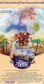
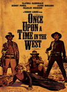
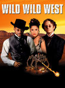
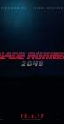
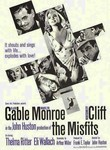
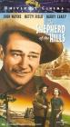

Historical: IMDb Top Westerns
http://www.imdb.com/chart/western
Showing Movies that were previously on this list. (Historical tracking started near the start of 2010.)- Normal View
List contains: 377 items, 616.1 hours. (29 are missing runtime)
Showing Movies that were previously on this list. (Historical tracking started near the start of 2010.)- Normal View
List contains: 377 items, 616.1 hours. (29 are missing runtime)
Stephen Klancher
...has seen 123
...has seen 243.5 hours
...has not seen 372.6 hours

Timeline - Covers
Most Recent:
Blade Runner 2049
First Unseen:
Lost (# 12)
...has seen 123
...has seen 243.5 hours
...has not seen 372.6 hours
Timeline - Covers
Most Recent:
Blade Runner 2049
First Unseen:
Lost (# 12)
Seen 107 times, Last seen February 15, 2023

Star Wars: Episode IV - A New Hope (1977)
Seen 102 times, Last seen February 14, 2023

Eternal Sunshine of the Spotless Mind (2004) Releases on 1969-12-31
Stephen Klancher: SEEN 
I love this movie. Would I zap my brain? Probably. Maybe I already did. How would I know? Whatever. I love this movie.
Seen 101 times, Last seen February 13, 2023

Se7en (1995)
Stephen Klancher: SEEN
This movie did not strike me as much as most people I guess. Am I too desensitized? I just seem to remember Brad Pitt swearing a lot.
Seen 114 times, Last seen February 9, 2023

The Big Lebowski (1998) Releases on 1998-02-15
Stephen Klancher: SEEN
Brett introduced me to Lebowski and I have since watched it many times. Love it.
Seen 89 times, Last seen February 8, 2023

The Matrix (1999)
Stephen Klancher: SEEN
My parents (divorced) got in an argument over this movie. My dad wanted to take me to see it, but my mom, more strict at the time, didn't want it to happen. At some point she finally gave in, but then we had to go see it in the cheaper, crappier theater. It was still amazing, of course. And as Bob can attest, at any given time my dad's house on Mountain Oak probably had the DVD of this or Fifth Element playing. It's too bad they never made any sequels to this. <i>None. Never.</i>
Seen 123 times, Last seen February 6, 2023

Fight Club (1999)
Stephen Klancher: SEEN
There's so much that is cool about this movie. But mostly the impact of the reveal the first time you watch it. The sort of Sixth-Sense change where you can then rewatch it as an entirely different experience.
Seen 114 times, Last seen February 3, 2023
Pulp Fiction (1994) Releases on 1994-10-14
Stephen Klancher: SEEN
Very fun. Reading Quentin Tarantino and Philosophy (http://www.amazon.com/Quentin-Tarantino-Philosophy-Popular-Culture/dp/0812696344) made it even more so.
Seen 104 times, Last seen February 2, 2023

Back to the Future (1985)
Stephen Klancher: SEEN
I love the Back to the Future trilogy. Yes even the third one. I've always especially loved the music. Watching Predator at some point I was wondering why it was reminding me of Back to the Future... and it turns out the same guy did the music...
Seen 110 times, Last seen February 1, 2023

Cool Hand Luke (1967)
Stephen Klancher: June 21, 2009
Aptly named... he's a cool character. The Lucy and 50 eggs scenes were fun. I liked the simple question he asked of god near the end: "You made me like I am; just where do I fit?"
Seen 111 times, Last seen January 30, 2023

Groundhog Day (1993) Releases on 1969-12-31
Stephen Klancher: SEEN
The joke is obvious but it's also the truth: I watched this movie over and over and over. This was one of a handful of movies we rewatched frequently growing up at my dad's house. I love Bill Murray and I love this movie.

Seen 98 times, Last seen January 25, 2023

The Princess Bride (1987)
Stephen Klancher: SEEN
We rented this movie at my dad's house when I was very young. So young in fact that I had no idea what the movie was called. I just had a vague memory of a really cool movie about a man in black with the storytelling grandfather as a frame for the adventure. In high school somehow this movie came up and I was excited to learn not only the title of the movie lost in my memories, but also that many other people liked it too. "As you wish" and "My name is Inigo Montoya" always make me smile.
Seen 96 times, Last seen January 24, 2023

The Shawshank Redemption (1994)
Stephen Klancher: SEEN
I'm not sure it forever deserves the top spot on IMDB, but definitely a good movie. I remember watching it on TV some night in Jr High when I was supposed to be working some project... let's see, do a diorama of a scene from 1984 or watch Shawshank? Hmm...
Seen 106 times, Last seen January 22, 2023

The Lord of the Rings: The Fellowship of the Ring (2001) Releases on 2001-12-19
Stephen Klancher: SEEN
I read half-way through the books, quit for a while, then finished right before this came out. I actually like the movies better. I enjoy all three movies, but one notable thing about this one was much fun it was that everyone around me was really into it at the time. The fact that the girls I was friends with and girlfriend at the time were drooling over the actors just added another reason for everyone to be enthusiastic and want to keep rewatching it. So yeah, fun times. :-)
Seen 95 times, Last seen January 18, 2023

The Muppet Movie (1979) Releases on 1979-06-22


Seen 82 times, Last seen December 20, 2017
Young Guns II (1990) Releases on 1990-08-01

Seen 1880 times, Last seen December 20, 2017

The Assassination of Jesse James by the Coward Robert Ford (2007)
Seen 28 times, Last seen December 20, 2017
The Killer (2017) Releases on 2017-11-10

Seen 2475 times, Last seen December 20, 2017

The Good, the Bad and the Ugly (1966)
Stephen Klancher: SEEN
I knew I had enjoyed Unforgiven and Shane, but this was the movie which convinced me: I really enjoy westerns! I watched this with a girl I met on a bus. She forgot her purse and I argued with the bus driver and made him wait until she came running up from the previous bus stop. Obviously the only thing to do was invite her over for dinner and a western right?
Seen 2474 times, Last seen December 20, 2017

Once Upon a Time in the West (1968) Releases on 1968-12-21
Stephen Klancher: February 8, 2008
I'm a sucker for musical themes, so harmonica = win. Another movie as evidence that I love westerns.
Seen 519 times, Last seen December 20, 2017

Westworld (1973)
Stephen Klancher: July 29, 2009
A western where robots run amok? Yes please. Yul Brynner was very cool. A significant contribution to why I wanted to see this movie was that you can see this movie poster in various areas in the amazing game System Shock 2 and I wanted to see what the connection was. Shodan this is not, but it was fun to watch.
Seen 6 times, Last seen December 20, 2017
Little House on the Prairie (1974) Releases on 2003-09-29
Seen 33 times, Last seen December 20, 2017
Urban Cowboy (1980) Releases on 1980-06-06
Seen 20 times, Last seen December 20, 2017

Aliens (1986)
Stephen Klancher: January 17, 2008
Game over man! A totally different kind of cool than the first one. Plus like half of the sounds from StarCraft are from this movie.
Seen 189 times, Last seen December 20, 2017

Young Guns (1988) Releases on 1988-08-12
Seen 2472 times, Last seen December 20, 2017
Dances with Wolves (1990) Releases on 1990-11-21

Seen 2474 times, Last seen December 20, 2017

Unforgiven (1992)
Stephen Klancher: SEEN
We watched this movie in Mr. Ruff's English class as part of a style comparison of this and another western of a much different tone, Shane. For me, the style of Unforgiven comes down to the line "Deserve's got nothin' to do with it." This was the first Western I have a distinct memory of watching. Prior to this I just had a vague assumption that I didn't care for Westerns, but this and a few others put me on the road to realizing how awesome they can be.

Seen 1805 times, Last seen December 20, 2017

Legends of the Fall (1994) Releases on 1995-01-13

Seen 553 times, Last seen December 20, 2017

Wild Wild West (1999) Releases on 1999-06-30

Seen 425 times, Last seen December 20, 2017

Westworld (2016) Releases on 2018-06-26
Seen 1571 times, Last seen December 20, 2017

The Lone Ranger (2013) Releases on 2013-07-03
Seen 2473 times, Last seen December 20, 2017

True Grit (2010) Releases on 1969-12-31
Stephen Klancher: December 22, 2010
Totally fun to see The Dude as a cowboy, and the girl did well too.
Seen 697 times, Last seen December 20, 2017

The Dark Tower (2017) Releases on 2017-08-04

Seen 1891 times, Last seen December 20, 2017

Django Unchained (2012) Releases on 2012-12-25
Seen 6 times, Last seen December 20, 2017

Hatfields & McCoys (2012) Releases on 2012-05-31
Seen 1293 times, Last seen December 20, 2017

A Million Ways to Die in the West (2014)
Seen 364 times, Last seen December 20, 2017

Hell or High Water (2016) Releases on 2016-08-12
Seen 15 times, Last seen December 20, 2017
Valley of Bones (2017) Releases on 2017-09-01
Seen 30 times, Last seen December 20, 2017
The Ballad of Lefty Brown (2017) Releases on 2017-12-15


Seen 21 times, Last seen December 19, 2017

American Beauty (1999)
Stephen Klancher: December 31, 2002
Fantastic movie. Many good quotables. I tend to rather watch something new instead of rewatching anything, but if I see this on I'm completely unable to pull myself away.
Seen 20 times, Last seen December 18, 2017

Vertigo (1958) Releases on 1969-12-31
Seen 19 times, Last seen December 17, 2017

Dr. Strangelove or: How I Learned to Stop Worrying and Love the Bomb (1964)
Stephen Klancher: SEEN
Peter Sellers is amazing. Just remember, "you can't fight in here! This is the War Room!"
Seen 1754 times, Last seen December 16, 2017

For a Few Dollars More (1965)
Stephen Klancher: April 12, 2009
Fantastic! He's badass personified and the music makes every scene epic. The watch theme had a nice haunting feel to it.
The music kept making me think of the theme from the western episode of Cowboy Bebop. Of course I have the direction of the reference chronologically backwards...
The music kept making me think of the theme from the western episode of Cowboy Bebop. Of course I have the direction of the reference chronologically backwards...
Seen 1559 times, Last seen December 16, 2017

Butch Cassidy and the Sundance Kid (1969) Releases on 1969-12-31
Stephen Klancher: June 25, 2009
I was totally surprised that this was so funny. Great team of actors made this fun to watch.
Seen 23 times, Last seen December 16, 2017

Raiders of the Lost Ark (1981)
Stephen Klancher: SEEN
I love Indiana Jones and Harrison Ford. I watched a lot of Star Wars and Indiana Jones while growing up. Just thinking about it makes me want to watch again...
Seen 1208 times, Last seen December 16, 2017
Cowboys & Aliens (2011) Releases on 2011-07-29
Stephen Klancher: August 1, 2011
Felt like it was pieced together from many different westerns and sci-fi stories... but in an enjoyable way.
Seen 21 times, Last seen December 15, 2017

Casablanca (1942)
Stephen Klancher: August 4, 2003
I borrowed and watched this summer of 2002. Even then I had a vague idea that I wanted to see some of the most well known movies, with the IMDB top 250 as my idea for a good start.
I really enjoyed it! And so many elements or lines in it that could be called cliche now were actually their origin. This is the movie that solidified my interest in watching well rated "old movies." Compare to Citizen Kane.
I really enjoyed it! And so many elements or lines in it that could be called cliche now were actually their origin. This is the movie that solidified my interest in watching well rated "old movies." Compare to Citizen Kane.
Seen 24 times, Last seen December 14, 2017

City of God (2002) Releases on 2004-02-13
Stephen Klancher: SEEN
I got a hold of this movie because of Erin near the beginning of college, although I can't remember for certain if I watched it with her or not. The main impression I remember about this movie is that it was vivid both in color and content.
Seen 616 times, Last seen December 13, 2017
Walt Disney's Wonderful World of Color (1954) Releases on 2002-11-08
Seen 1282 times, Last seen December 13, 2017
Gunslinger (1956) Releases on 0000-00-00
Seen 1461 times, Last seen December 13, 2017
Have Gun, Will Travel (1957) Releases on 2008-02-29
Seen 1810 times, Last seen December 13, 2017
Jesse James Meets Frankenstein's Daughter (1966) Releases on 1966-04-10
Seen 1667 times, Last seen December 13, 2017
The Adventures of Brisco County Jr. (1993) Airs on 1999-03-26
Seen 654 times, Last seen December 13, 2017
Lucky Luke and the Daltons (2004) Releases on 2004-12-08
Seen 1878 times, Last seen December 13, 2017
The Quick and the Undead (2006) Releases on 2006-02-02

Seen 22 times, Last seen December 13, 2017

Inception (2010) Releases on 2010-07-16
Stephen Klancher: July 17, 2010
Dreams within dreams... there was never a chance I wouldn't like this movie. It was incredibly fun.
Seen 597 times, Last seen December 12, 2017
Winchester '73 (1950) Releases on 1950-07-12
Seen 690 times, Last seen December 12, 2017
The Man Who Shot Liberty Valance (1962) Releases on 1962-04-22
Stephen Klancher: January 27, 2011
John Wayne and Jimmy Stewart... two totally different kind of badasses. This was the first John Wayne movie I've seen and it was great.
Seen 21 times, Last seen December 12, 2017

Star Wars: Episode V - The Empire Strikes Back (1980)
Stephen Klancher: SEEN
This was the one I watched least when I was younger. The slightly less familiarity has made it more attractive for rewatching in later years. Also it's Star Wars. <3
Seen 21 times, Last seen December 10, 2017

The Lord of the Rings: The Return of the King (2003) Releases on 2003-12-17
Stephen Klancher: December 17, 2003
Probably my favorite of the trilogy, but they are all fantastic.
Seen 19 times, Last seen December 9, 2017

Schindler's List (1993)
Stephen Klancher: SEEN
I watched this in my 9th grade history class. Liam Neeson back when his only power was being German. No force, no lightsaber. But seriously, this is a serious movie. I don't remember much of the specifics at this point, but watching Life is Beautiful more recently made me think of watching this.
Seen 19 times, Last seen December 8, 2017
The Dark Knight (2008)
Stephen Klancher: July 19, 2008
Saw on the IMAX twice on the first Saturday after release. OMG so good! Got a picture of me with the Joker at the theater too.
Seen 22 times, Last seen December 7, 2017

12 Angry Men (1957)
Stephen Klancher: October 19, 2007
I actually saw the 1997 version first (Tony Danza!), but I love them both. Such a great thing to have a story focused down to pretty much one room and just watching the characters interact. I liked this (both versions actually) a lot.
Seen 17 times, Last seen December 4, 2017

The Godfather: Part II (1974)
Stephen Klancher: January 2, 2004
I can't say I remember a lot about this movie other than the fact that I watched with Bob not long after college started. And that he heard the third movie was bad so he refused to watch it... so this is where we stopped.
Seen 188 times, Last seen December 4, 2017
In a Valley of Violence (2016) Releases on 2016-10-21
Seen 19 times, Last seen December 3, 2017

The Godfather (1972) Releases on 1972-03-24
Stephen Klancher: SEEN
I don't remember much about this movie directly. The main thing I remember is a comment from a friend while we all watched it together the summer before college. My girlfriend at the time was either disinterested or bothered by the violence, whereas I thought it was a cool movie. By my friend's observation, this was the first time in a long time that I insisted on an opinion contrary to hers. I don't remember being that bad, but the observation was memorable, and this movie reminds me of it.

Seen 0 times, Last seen November 30, 2017

Blade Runner 2049 (2017) Releases on 2017-10-06
Stephen Klancher: October 12, 2017
Seen 5 times, Last seen November 29, 2017

Star Wars: The Force Awakens (2015)


Seen 10 times, Last seen November 23, 2017

The Wolf of Wall Street (2013)

Seen 113 times, Last seen November 21, 2017

Silverado (1985) Releases on 1985-07-10


Seen 94 times, Last seen November 19, 2017
Jeremiah Johnson (1972) Releases on 1972-09-10


Seen 11 times, Last seen November 16, 2017

Finding Nemo (2003)
Stephen Klancher: SEEN
The main thing I remember about this movie was that it had very pretty color. And I think I watched it with a few other people in the common room of our floor of my freshman dorm.

Seen 19 times, Last seen November 13, 2017

Toy Story (1995)
Stephen Klancher: SEEN
Pixar is always pretty solid and Tim Allen plus Tom Hanks make for some fun recognizable voice acting.
Seen 13 times, Last seen November 12, 2017

The Apartment (1960)
Stephen Klancher: December 13, 2008
Early in the movie I felt annoyed that Lemmon felt too much like his comedy character in Some Like It Hot, but overall both he and MacLaine were great in this movie.
Seen 21 times, Last seen November 11, 2017

Braveheart (1995)
Stephen Klancher: SEEN
Hmm, I'm not 100% I've seen the beginning of this movie. See this was the second rated R movie I ever saw, with the first being the movie Speed. My mom was on her honeymoon and I was with cousins and other family at a hotel whereever we were on the coast. So we got away with renting rated R movies. I watched Speed in one room and went to the next room and joined them in watching Braveheart. I mostly just remember the iconic, "You can take our lives, but you can never take our freedom!" Also I saw a statue of William Wallace in front of a castle years later. I should rewatch it someday just because now I know and love Patrick McGoohan.

Seen 17 times, Last seen November 9, 2017

Million Dollar Baby (2004)
Stephen Klancher: July 4, 2009
Excellent movie! A lot like Gran Torino. Those three are fantastic actors. Some really hard to watch scenes, but just very good.
Seen 15 times, Last seen November 8, 2017

Hotel Rwanda (2004)
Seen 17 times, Last seen November 7, 2017
The Maltese Falcon (1941)
Stephen Klancher: SEEN
One of the early "old" movies that I watched. Enjoying it firmed up the notion that I would actually go through the IMDb list.
Seen 18 times, Last seen November 6, 2017

V for Vendetta (2005) Releases on 2006-03-17
Stephen Klancher: March 17, 2006
I loved this movie. In terms of pure enjoyment coming out of the theater this ranks near the top for me. All kinds of cool.
Seen 19 times, Last seen November 5, 2017

Mr. Smith Goes to Washington (1939)
Seen 18 times, Last seen November 3, 2017

Star Wars: Episode VI - Return of the Jedi (1983)
Seen 11 times, Last seen November 2, 2017

The Lion King (1994)
Stephen Klancher: SEEN
Back in the good old days of Disney movies... Scar was a great villain and the song Be Prepared is incredible.
Seen 20 times, Last seen November 1, 2017

Cinema Paradiso (1988) Releases on 1969-12-31
Stephen Klancher: SEEN
I watched this with my mom in Bakersfield at some point. I remember hearing the title and not thinking I was interested, until either I looked it up or she told me it was on the IMDb list... now it was part of the mission! The movie itself was okay...
Seen 13 times, Last seen October 31, 2017

The Prestige (2006)
Stephen Klancher: SEEN
I liked this a lot. Although I seem to remember that something about it lead to an argument. Whatever, very fun.
Seen 20 times, Last seen October 30, 2017

The Green Mile (1999)
Seen 14 times, Last seen October 29, 2017

Gladiator (2000)
Stephen Klancher: SEEN
Fun movie... I always picture the "walking through the fields" sequence... Also, Battle!
Seen 20 times, Last seen October 27, 2017

Alien (1979)
Stephen Klancher: January 15, 2008
I thought I had seen it before. Finally saw for sure now that I'm going through all the Alien and Predator movies with Nick.
Very cool movie.
Very cool movie.
Seen 14 times, Last seen October 26, 2017

Terminator 2: Judgment Day (1991)
Seen 17 times, Last seen October 25, 2017

It's a Wonderful Life (1946)
Stephen Klancher: SEEN
This was our Christmas movie growing up with my dad and it has ingrained a like of Jimmy Stewart in my brain.
Seen 18 times, Last seen October 24, 2017

The Truman Show (1998)
Stephen Klancher: SEEN
I loved this movie. The only problem was it gave me a more specific scenario for my general paranoia to latch on to. Clearly my life is full of people behind the scenes watching and manipulating my life. If I tune my radio just right I might be able to hear their radio chatter...
Seen 14 times, Last seen October 23, 2017

Barry Lyndon (1975)
Seen 12 times, Last seen October 22, 2017

Howl's Moving Castle (2004) Releases on 1969-12-31
Seen 21 times, Last seen October 21, 2017

Gandhi (1982) Releases on 1969-12-31
Stephen Klancher: January 20, 2010
I learn more from Hollywood than I ever did from school. Seems like some of this stuff would have been cool to learn more about in a history class.
Seen 19 times, Last seen October 20, 2017
Mary and Max (2008) Releases on 2009-04-09
Stephen Klancher: December 11, 2010
Weirdly funny and endearing. I was surprised how much I enjoyed it.
Seen 17 times, Last seen October 19, 2017

Network (1976) Releases on 1969-12-31
Stephen Klancher: April 25, 2010
A lot of cool moments throughout this. I enjoyed watching Faye Dunaway in Bonnie and Clyde just recently and she and William Holden were great in this.
Seen 20 times, Last seen October 18, 2017

Into the Wild (2007)
Stephen Klancher: April 22, 2009
Good movie. Better than I thought it would be from the description and suited my mood today.
Seen 1903 times, Last seen October 17, 2017
The Treasure of the Sierra Madre (1948)
Stephen Klancher: August 21, 2008
My memory of the movie is summed up by the quote from the old man: "I know what gold does to men's souls."
Seen 19 times, Last seen October 17, 2017
The War Wagon (1967) Releases on 1967-05-27
Seen 20 times, Last seen October 17, 2017

My Neighbor Totoro (1988)
Stephen Klancher: April 21, 2010
Cat-bus is awesome. Most of what I like in this movie is better done in Spirited Away. But still this was a relaxing movie with good animation and occasionally good music too.
Seen 20 times, Last seen October 16, 2017

Annie Hall (1977) Releases on 1977-04-20
Stephen Klancher: SEEN
I watched this while doing other things and I'm never sure if that means I'm not giving something a fair chance, but I didn't care for this movie.

Seen 1269 times, Last seen October 15, 2017
Billy the Kid vs. Dracula (1966) Releases on 0000-00-00
Seen 16 times, Last seen October 15, 2017

Kill Bill: Vol. 1 (2003) Releases on 2003-10-10
Stephen Klancher: October 18, 2003
It was super exciting to go see this in the theater. I had watched other Tarantino movies over the previous year or two and introduced them to Brett sometime after we met. And seeing a movie like that in a theater down the street from a university makes for a fun crowd.
Seen 16 times, Last seen October 13, 2017

Jaws (1975) Releases on 1975-06-20
Stephen Klancher: February 16, 2009
Body in the boat scared the fuck out of me. That was an intense movie.
Seen 23 times, Last seen October 12, 2017

It Happened One Night (1934)
Stephen Klancher: July 7, 2009
I was amused at the Walls of Jericho motif and the fact that they asked for a trumpet at the end. This time, dear, he gave a damn.

Seen 16 times, Last seen October 2, 2017

Wild Strawberries (1957)
Seen 20 times, Last seen October 1, 2017

Blade Runner (1982)
Stephen Klancher: SEEN
I watched this and only thought it was ok. I found out later that the Director's Cut which I watched was lacking the narration of the original. I often really enjoy narration in movies and might have enjoyed this more if I had a clearer understanding of what was going on in some parts. Maybe someday I'll have to rewatch the original version.
Seen 15 times, Last seen September 29, 2017

2001: A Space Odyssey (1968)
Stephen Klancher: SEEN
I think I watched parts of this in my Physics class in high school, then came home and watched the rest. I think there was no justification other than that Mr Loritz just wanted to watch the movie.
Seen 20 times, Last seen September 28, 2017

Lawrence of Arabia (1962)
Stephen Klancher: July 2, 2008
I remember my mom telling me for a long time that this was her favorite movie, so I was excited to watch it. Very cool epic.
Seen 18 times, Last seen September 27, 2017

The Lives of Others (2006)
Seen 230 times, Last seen September 25, 2017
Open Range (2003) Releases on 2003-08-15
Seen 20 times, Last seen September 23, 2017

Citizen Kane (1941)
Stephen Klancher: February 12, 2008
Overrated. Compare to Casablanca because they are both "old movies" (1 year apart) and both always ranked high on movie lists.
Seen 17 times, Last seen September 21, 2017

Spirited Away (2001) Releases on 2001-07-20
Stephen Klancher: April 6, 2003
I watched with in a theater in Bakersfield with my mom. I don't know if it was a rerelease or late after the release or if this is all they did in Bakersfield, but I seem to remember that it was only playing on this one screen in town and it was an abnormally small one.
I really enjoyed the animation and the fantasy of the whole setting.
I really enjoyed the animation and the fantasy of the whole setting.
Seen 20 times, Last seen September 20, 2017
City Lights (1931)
Stephen Klancher: October 20, 2008
A few lol moments. I'm not very into silent films. I think the main role they should play in modern times is a lesson for filmmakers: You can communicate without saying something directly in dialog.
Seen 14 times, Last seen September 19, 2017
The Life and Times of Judge Roy Bean (1972) Releases on 1972-12-18
Seen 5 times, Last seen August 19, 2017
Curse of the Undead (1959) Releases on 1959-05-01
Seen 6 times, Last seen August 13, 2017

River of No Return (1954) Releases on 2017-08-08
Seen 16 times, Last seen August 9, 2017

Monty Python and the Holy Grail (1975)
Stephen Klancher: SEEN
I had heard every joke long before I actually saw this, so while it was funny, it was underwhelming and not very memorable.
Seen 73 times, Last seen August 6, 2017
Hang 'Em High (1968) Releases on 1968-08-03

Seen 49 times, Last seen July 30, 2017
The Great Race (1965) Releases on 1965-07-01
Seen 6 times, Last seen July 24, 2017
Gunfight at the O.K. Corral (1957) Releases on 1957-05-30
Seen 96 times, Last seen July 17, 2017
Seven Brides for Seven Brothers (1954) Releases on 1954-07-22
Seen 77 times, Last seen July 10, 2017
How the West Was Won (1962) Releases on 1962-11-01

Seen 6 times, Last seen June 27, 2017
Bend of the River (1952) Releases on 1952-02-13
Seen 42 times, Last seen June 20, 2017

The Misfits (1961) Releases on 1961-02-01

Seen 798 times, Last seen June 5, 2017
The Outlaw Josey Wales (1976)
Seen 148 times, Last seen June 5, 2017
Appaloosa (2008) Releases on 2008-10-03
Stephen Klancher: April 3, 2011
A decent movie, but mostly just fun to watch Viggo Mortensen, Ed Harris, and Jeremy Irons. All cool actors.
Seen 19 times, Last seen May 22, 2017
The Legend of Ben Hall (2016) Releases on 2016-12-01

Seen 14 times, Last seen May 3, 2017

Stagecoach: The Texas Jack Story (2016) Releases on 2016-11-04
Seen 18 times, Last seen April 20, 2017

Up (2009)
Stephen Klancher: June 14, 2009
That was a fantastic movie. Visually very pretty. The kid and the dog are a great counterpoint to the old man. Not many movies manage to be so happy and kid -friendly and actually be so amazing. I walked out of the theater happy!
Seen 13 times, Last seen March 21, 2017
Raintree County (1957) Releases on 1957-12-20
Seen 12 times, Last seen February 28, 2017

Strangers on a Train (1951)
Stephen Klancher: April 5, 2009
Solid main characters made this a lot of fun to see. I kept seeing Bruno as Bill Murray and Guy as Alan Cumming. Bruno was a great clever-psycho bad guy. And that ending had to be the most dangerous merry-go-round in the world.

Seen 6 times, Last seen February 7, 2017
The Unsinkable Molly Brown (1964) Releases on 1964-06-11
Seen 6 times, Last seen December 27, 2016
The Man from Snowy River (1982) Releases on 1982-11-05
Seen 97 times, Last seen December 27, 2016

Outlaws and Angels (2016) Releases on 2016-01-25
Seen 8 times, Last seen November 23, 2016

The Imitation Game (2014) Releases on 2014-12-25


Seen 15 times, Last seen September 15, 2016
The Frisco Kid (1979) Releases on 1979-07-13
Seen 201 times, Last seen September 15, 2016
Pale Rider (1985) Releases on 1985-06-28

Seen 3 times, Last seen September 6, 2016
Guardians of the Galaxy (2014)
Stephen Klancher: August 12, 2014
Incredibly fun! All the more so since I went in thinking this was a bunch of characters unknown to me, and then finding out I knew half of them from the Infinity Trilogy.
Seen 21 times, Last seen July 19, 2016

Six Gun Savior (2016) Releases on 2016-07-05
Seen 7 times, Last seen July 13, 2016
They Call Me Trinity (1970) Releases on 1971-11-04
Seen 7 times, Last seen July 13, 2016
Trinity Is STILL My Name! (1971) Releases on 1971-10-21
Seen 45 times, Last seen June 28, 2016
The Sons of Katie Elder (1965) Releases on 1965-07-01

Seen 21 times, Last seen June 14, 2016

The Keeping Room (2014) Releases on 0000-00-00

Seen 122 times, Last seen May 17, 2016

The Warrior's Way (2010) Releases on 2010-12-03
Stephen Klancher: March 27, 2011
Very cool visual style throughout and beautiful sword-fight choreography. Plenty of funny moments too. I was hoping that Geoffery Rush would do more, but the main character Dong-gun Jang was pretty awesome.


Seen 20 times, Last seen February 2, 2016
Man in the Wilderness (1971) Releases on 0000-00-00
Seen 19 times, Last seen January 26, 2016
Quigley Down Under (1990) Releases on 1990-10-17
Seen 13 times, Last seen December 15, 2015
The Professionals (1966) Releases on 1966-11-02
Seen 6 times, Last seen December 15, 2015
The Stalking Moon (1968) Releases on 1968-12-25
Seen 21 times, Last seen December 1, 2015
Friendly Persuasion (1956) Releases on 1956-11-25
Seen 77 times, Last seen November 17, 2015
The Legend of Zorro (2005) Releases on 2005-10-28
Seen 6 times, Last seen November 10, 2015
Broken Arrow (1950) Releases on 1950-07-21
Seen 84 times, Last seen October 20, 2015
The Horse Whisperer (1998) Releases on 1998-05-15
Seen 6 times, Last seen September 15, 2015
The Hanging Tree (1959) Releases on 1959-02-11
Seen 6 times, Last seen September 15, 2015
A Man Called Horse (1970) Releases on 1970-04-28
Seen 6 times, Last seen September 8, 2015
There Was a Crooked Man... (1970) Releases on 0000-00-00
Seen 20 times, Last seen September 1, 2015
Rio Grande (1950) Releases on 1950-11-15
Seen 97 times, Last seen August 25, 2015

Maverick (1994) Releases on 1994-05-20
Seen 55 times, Last seen August 4, 2015
Seraphim Falls (2007) Releases on 2007-04-13
Seen 6 times, Last seen July 21, 2015
She Wore a Yellow Ribbon (1949) Releases on 1949-10-22
Seen 145 times, Last seen July 14, 2015
Gallowwalkers (2012) Releases on 0000-00-00
Seen 6 times, Last seen June 30, 2015
American Outlaws (2001) Releases on 2001-08-17
Seen 13 times, Last seen June 16, 2015
North to Alaska (1960) Releases on 1960-11-13
Seen 0 times, Last seen June 7, 2015

Boyhood (2014) Releases on 2014-08-15
Seen 6 times, Last seen May 12, 2015
Pat Garrett & Billy the Kid (1973) Releases on 1973-05-23

Seen 431 times, Last seen March 31, 2015
Ride the High Country (1962) Releases on 1962-07-28
Seen 204 times, Last seen March 16, 2015
Saber Rider and the Star Sheriffs (1987) Airs on 2006-03-21
Seen 34 times, Last seen March 10, 2015
The Dark Valley (2014) Releases on 2014-02-10
Seen 6 times, Last seen February 10, 2015
The Harvey Girls (1946) Releases on 1946-01-18
Seen 6 times, Last seen February 10, 2015
The Long Riders (1980) Releases on 1980-05-16
Seen 13 times, Last seen February 3, 2015
Duel in the Sun (1946) Releases on 0000-00-00
Seen 6 times, Last seen February 3, 2015
The Horse Soldiers (1959) Releases on 0000-00-00
Seen 28 times, Last seen December 29, 2014

The Proposition (2005) Releases on 2005-10-06
Seen 13 times, Last seen December 29, 2014
The Retrieval (2013) Releases on 2013-03-11
Seen 6 times, Last seen September 19, 2014

Slumdog Millionaire (2008)
Stephen Klancher: February 15, 2009
Fantastic music and a very well put together movie. I can see why it was so well liked.

Seen 6 times, Last seen August 3, 2014
The Man Who Loved Cat Dancing (1973) Releases on 1973-10-31
Seen 41 times, Last seen August 3, 2014
Shanghai Knights (2003) Releases on 2003-01-30
Seen 6 times, Last seen July 13, 2014
The Missouri Breaks (1976) Releases on 1976-05-19
Seen 2 times, Last seen July 11, 2014

Black Swan (2010) Releases on 2010-12-17
Stephen Klancher: December 20, 2010
That was crazy amazing. All I knew going in was there was ballet and it was supposed to be good. Totally surprising and totally insane... the qualities I like most in a movie.
Seen 6 times, Last seen June 29, 2014
Rooster Cogburn (1975) Releases on 1975-10-17
Seen 596 times, Last seen June 22, 2014

The Wild Bunch (1969)
Stephen Klancher: August 6, 2009
Really enjoyable characters. There were a lot of brutal scenes in this. Non-combatants given no quarter in shootouts. The final fight was the quintessential blaze of glory.
Seen 6 times, Last seen June 15, 2014
The Last Sunset (1961) Releases on 0000-00-00
Seen 33 times, Last seen June 8, 2014
A Night in Old Mexico (2013) Releases on 2013-11-08
Seen 68 times, Last seen June 8, 2014
Ain't Them Bodies Saints (2013) Releases on 2013-01-20

Seen 6 times, Last seen May 5, 2014

The Shepherd of the Hills (1941) Releases on 1941-07-18
Seen 169 times, Last seen April 21, 2014
Sweet Vengeance (2013) Releases on 2013-01-24
Seen 427 times, Last seen March 31, 2014
The Terror of Tiny Town (1938) Releases on 1938-12-01

Seen 6 times, Last seen March 24, 2014
My Name Is Nobody (1973) Releases on 1973-12-13
Seen 602 times, Last seen February 17, 2014
High Noon (1952) Releases on 1952-07-30
Stephen Klancher: April 15, 2009
That was just a fantastic movie. I very much like when movies span a narrow in-story time frame and this one was real-time... the lead up to the arrival of the noon train. I'm liking every western I seen recently: such great potential for heroes, anti-heroes, and villains.
Seen 19 times, Last seen February 17, 2014
The Undefeated (1969) Releases on 1969-10-12
Seen 185 times, Last seen January 13, 2014

Casa de mi Padre (2012) Releases on 1969-12-31
Seen 6 times, Last seen January 6, 2014
Cahill U.S. Marshal (1973) Releases on 1973-07-11
Seen 33 times, Last seen November 4, 2013
Far and Away (1992) Releases on 1992-05-22
Seen 611 times, Last seen November 4, 2013

Dead Man (1995) Releases on 1996-05-10
Seen 1 times, Last seen October 18, 2013

WALLE (2008)
Stephen Klancher: July 27, 2008
I saw this with Tim and his wife at the tail end of its theater run. Cute movie and the first half or so is another good example of how much can be communicated with no verbal dialog.
Seen 5 times, Last seen August 12, 2013
Calamity Jane (1953) Releases on 1953-11-04
Seen 5 times, Last seen July 29, 2013
7 Faces of Dr. Lao (1964) Releases on 1964-03-18
Seen 5 times, Last seen July 15, 2013
The Legend of the Lone Ranger (1981) Releases on 1981-05-22
Seen 20 times, Last seen July 15, 2013
Dead Man's Burden (2012) Releases on 2012-06-16

Seen 9 times, Last seen June 17, 2013
Mackenna's Gold (1969) Releases on 1969-05-10
Seen 5 times, Last seen April 8, 2013
Alien Showdown: The Day the Old West Stood Still (2013)


Seen 47 times, Last seen February 11, 2013

Sukiyaki Western Django (2007) Releases on 2007-09-15
Seen 0 times, Last seen January 15, 2013

The 70th Annual Golden Globe Awards (2013) Releases on 2013-01-13

Seen 13 times, Last seen December 31, 2012
The King Is Dead (2012) Releases on 2012-07-12
Seen 6 times, Last seen December 17, 2012
A Vampire's Tale (2009) Releases on 2011-08-22
Seen 0 times, Last seen December 12, 2012
Apollo 13 (1995) Releases on 1995-06-30
Seen 21 times, Last seen December 3, 2012
Heathens and Thieves (2012) Releases on 2012-11-13
Seen 67 times, Last seen November 24, 2012
Breaker! Breaker! (1977) Releases on 1980-12-19

Seen 0 times, Last seen September 24, 2012

The 64th Primetime Emmy Awards (2012) Releases on 2012-09-23
Seen 582 times, Last seen September 17, 2012
Destry Rides Again (1939) Releases on 1940-01-22

Seen 581 times, Last seen September 17, 2012
Lonely Are the Brave (1962) Releases on 1969-12-31
Seen 582 times, Last seen September 17, 2012
The New Land (1972) Releases on 1972-02-26
Seen 582 times, Last seen September 17, 2012

The Gold Rush (1925) Releases on 2011-02-16
Stephen Klancher: August 30, 2009
Didn't think much of it. I watched the later version where Chaplin narrated. It might have been better just to watch the silent version because then there would have been no distraction from the physical comedy which is his skill.
Seen 1 times, Last seen February 28, 2012
The 84th Annual Academy Awards (2012) Releases on 2012-02-26
Seen 1 times, Last seen January 17, 2012

The 69th Annual Golden Globe Awards (2012) Releases on 2012-01-15

Seen 1 times, Last seen September 20, 2011

The 63rd Primetime Emmy Awards (2011) Releases on 2011-09-18
Seen 16 times, Last seen July 5, 2011
Let the Bullets Fly (2010) Releases on 2010-12-16
Seen 2 times, Last seen May 11, 2011
Deus e o Diabo na Terra do Sol (1964) Releases on 1964-07-10
Seen 85 times, Last seen April 23, 2011
The Emigrants (1971) Releases on 1971-03-08
2011-02-26 - Watched Star Wars Begins, the excellent fan-made documentary.